何欣純a_chun1973
@a_chun1973:台中海線的風，正吹向整個台中！ 感謝大家給予何欣純無比信心，逗陣拚、一起贏！！
Posts
@a_chun1973:台中海線的風，正吹向整個台中！ 感謝大家給予何欣純無比信心，逗陣拚、一起贏！！

每個高雄人的青春，都在新興留下故事；我希望下一代，也能在這裡寫下自己的故事！ 四年前，我提著一只皮箱來到 #高雄，戶籍就設在新興區，今晚 #廟口 #音樂會 來到 #大港埔鼓壽宮，我特別向 #媽祖 報告：這四年來，我沒有離開，也沒有忘記當初對高雄的承諾。 #新興區 不大，人口也不算最多，但這裡有許多人共同的回憶：大統百貨、新崛江、玉竹商圈、美麗島連接到附近的高雄車站，多少人的青春、愛情與夢想，都從這裡開始。 只是，當年的繁華，正面臨新的挑戰，老屋越來越多、人潮越來越少，年輕人離開了，商圈也失去了過去的光彩，但我相信，新興區不該只是大家的回憶，更應該是下一代的未來。 我要推動老屋重建與安全改善，讓老房子住得安心；盤點閒置空間，協助年輕人創業開店，讓玉竹商圈、新崛江重新找回活力；打造更安全的通學環境、更友善的人行空間，讓長輩、輪椅族與嬰兒車都能自在通行。 更重要的是，讓 #中央公園 重新成為高雄最亮眼的 #城市品牌，白天是綠意盎然的城市森林，晚上是展現創意、藝術與活力的城市舞台，把人潮找回來，把商機找回來，也把年輕人的夢想找回來。 有人說，高雄需要的是希望，我的希望很簡單，就是讓年輕人留得下來、住得起來、敢做夢；讓下一代在新興區能有房子、有孩子、有未來。 我特別向鄉親懇託，高雄已給了民進黨40年，但可以給我4年試試看！我會讓新興區重新展現風華，讓中央公園再次成為高雄的驕傲，讓全世界看見高雄。 我沒有金脈，但我有大家，我說的話，媽祖在聽；我做的事，媽祖在看。身為媽祖生的孩子，我會一步一腳印，兌現對高雄的承諾。 1128，拜託大家站出來，我們一起讓高雄向前走，讓新興再現風華！ 感謝 許采蓁 議員、參選人 黃裕庭/傾聽民意，庭進議會 #黃鈺婷 及特別來賓 楊智伃
@schuanglawyer:是誰這麼有才？昨晚有市民朋友，把「杰印發功」徽章送給我！ 感謝熱情支持者把祝福化作創意小物，讓我們一起杰伴發功、杰in成功，桃園必勝！ 下次遇到，要不要跟我一起「杰印」😎？


@su.chiaohui:和新北隊的夥伴們一起，為大家帶來更多元、漂亮的新北！ 這兩天我接連到中和、土城參與了吳昇翰、張嘉玲舉辦的親子活動，不但感受大小朋友的活力，也再一次和每一位家長報告，未來我一定會從孩子的高度出發，重新檢視新北的公共設施是否真正符合孩子的需求，讓家庭出門更加安心和便利！ 我會建置臨時托育查詢平台，同時增加夜間托育場所與服務量能，為不同工作型態家庭提供實際的照顧，做每一位家長的神隊友。 我也參與了張志豪的後援會成立茶會，志豪過去擔任議員就一直推動「興南夜市活化再復興運動」，這跟我所提出的「地方商圈」政見一致，未來我會提高新北商圈補助，幫助商圈改善硬體設施、優化週邊的交通規劃，讓民眾可以更輕鬆、舒適的到新北各商圈觀光旅遊，吸引更多人來新北觀光。 接下來又是新的一週，我會繼續為大家衝！


@hammer__lee:說實在，行程一直跑，聲音開始有些沙啞，因為新北的願景有很多想說。 昨天「我們都挺李四川」大會實在感動，我用盡全力和大家懇託，沒想到今天聲音都快沒了。 請大家見諒。聲音會回來，該做的事不會停。

Lighting！青春來挺！ 民進黨青年部 國務青輔選團啟動第一週就來到高雄，我和 尹立 左營楠梓市議員參選人 也加入街宣的行列，和青年朋友一起向往來的人潮問好，爭取支持💪 謝謝青年夥伴的熱情！我專程帶來飲料，讓大家消消暑，不只是今天的街宣，高雄青年的未來，也有我相挺！
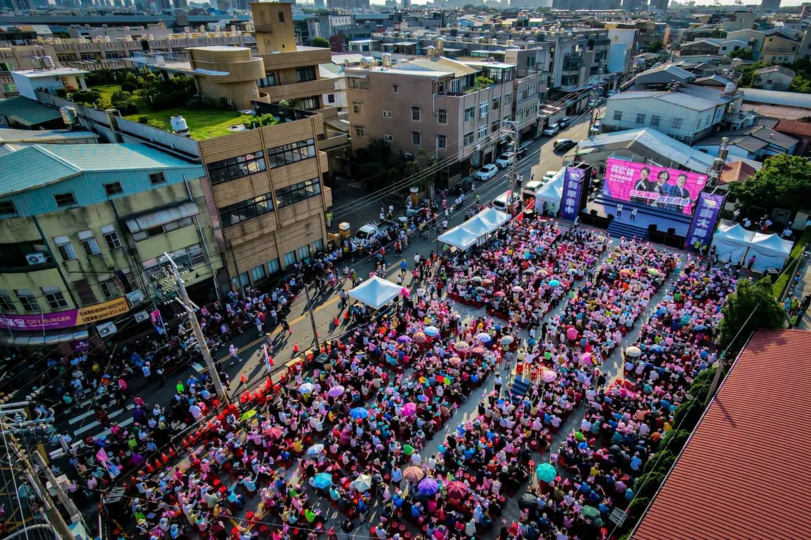
@a_chun1973:現在台中海線，對台中滿滿滿滿的期待！ 等下我就要上台演說，向台中市民報告何欣純的市政願景，直播連結在下面，何欣純邀請您一起加入觀賞分享！！

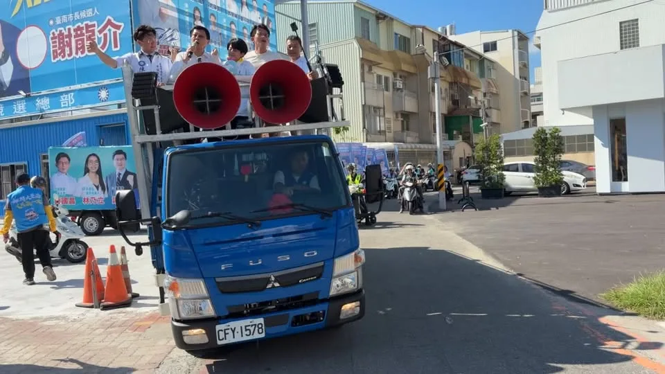
臺南藍白合聯合服務中心成立暨車隊遊行
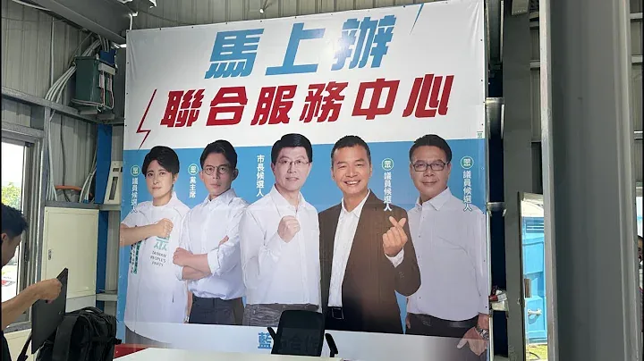
臺南藍白聯合服務中心成立揭牌暨遊行｜謝龍介
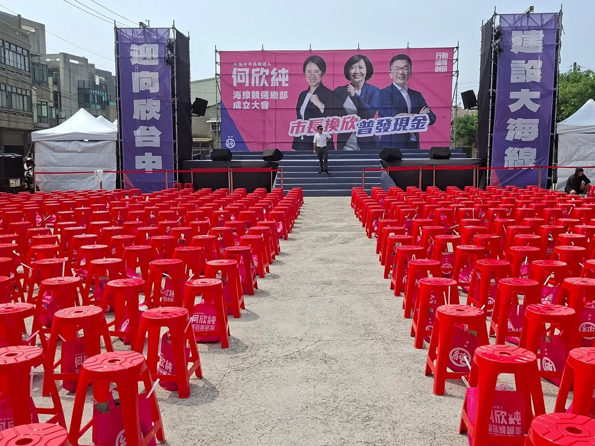
@a_chun1973:台中海線的陽光好美、好燦爛，此時還起風了！！ 椅子排列整齊，恭候市民鄉親大駕光臨，給予何欣純最大的鼓勵與支持！！ 何欣純海線競選總部 今天下午就要成立，歡迎所有市民鄉親好朋友、欣潮、追欣族、台中純派 一起參加！全力相挺何欣純💪 📌日期｜9/13（日）今天下午3：30 📌地點｜清水龍天宮旁（台中市清水區西社里鎮新路21號）
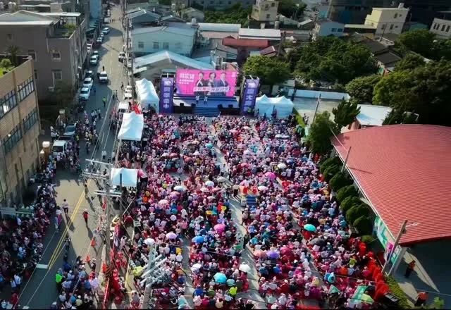
台中海線的風，正在吹向整個台中！ 謝謝大家給予何欣純無比信心，逗陣拚、一起贏！！

@zenolai:這個週末，從南到北，我們連續成立了大寮、湖內、前新苓鼓鹽後援會。看到各地好朋友站出來相挺，這是我繼續為高雄拚到底的最大動力！ 未來我會推動「大南方計畫」和產業升級基金，協助傳產導入智慧製造、完善冷鏈運銷，讓年輕人有機會留在家鄉發展；同時也會加速國道七號建設、強化治水防洪，把大家的生活環境顧好。
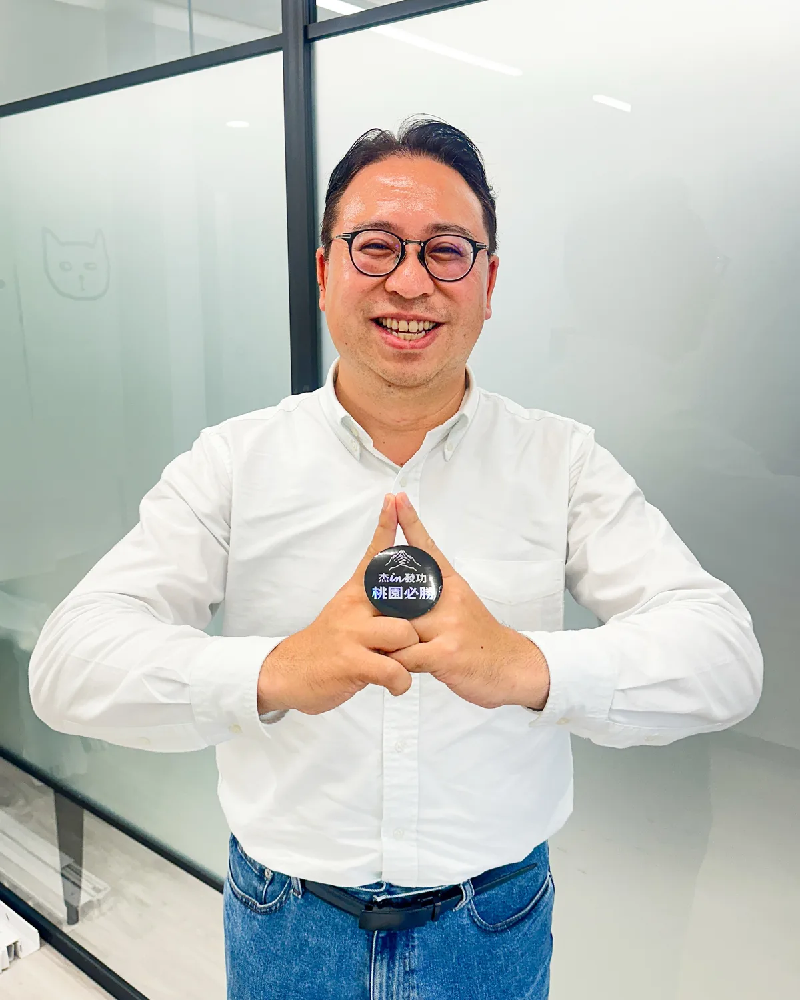
是誰這麼有才？昨晚有市民朋友，把「杰印發功」徽章送給我！ 感謝熱情支持者把祝福化作創意小物，讓我們一起杰伴發功、杰in成功，桃園必勝！ 下次遇到，要不要跟我一起「杰印」😎？

和新北隊的夥伴們一起，為大家帶來更多元、漂亮的新北！ 這兩天我接連到中和、土城參與了吳昇翰、張嘉玲舉辦的親子活動，不但感受大小朋友的活力，也再一次和每一位家長報告，未來我一定會從孩子的高度出發，重新檢視新北的公共設施是否真正符合孩子的需求，讓家庭出門更加安心和便利！ 我會建置 #臨時托育查詢平台，同時增加夜間托育場所與服務量能，為不同工作型態家庭提供實際的照顧，做每一位家長的神隊友。 下個禮拜，我還會和 #數感實驗室 合作，在 #新店耕莘專校 舉辦「#水獺媽媽數感樂園」活動，讓數學融入生活，歡迎大家一起來哦！ 我也參與了張志豪的後援會成立茶會，志豪過去擔任議員就一直推動「興南夜市活化再復興運動」，希望為地方商圈帶動觀光人潮，這跟我所提出的「地方商圈」政見一致，未來我會提高新北商圈補助，幫助商圈改善硬體設施、優化週邊的交通規劃，讓民眾可以更輕鬆、舒適的到新北各商圈觀光旅遊，吸引更多人來新北觀光。 接下來又是新的一週，我會繼續為大家衝！
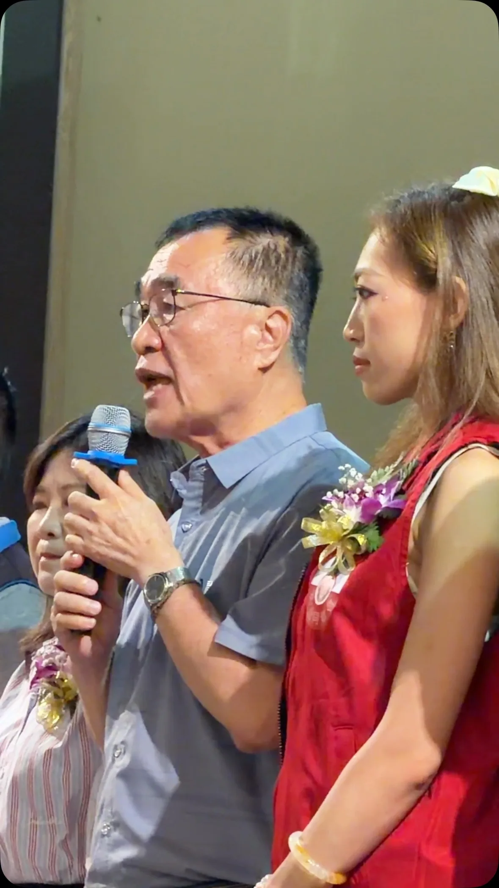
說實在，行程一直跑，聲音開始有些沙啞，因為新北的願景有很多想說。 昨天「我們都挺李四川」大會實在感動，我用盡全力和大家懇託，沒想到今天聲音都快沒了。 請大家見諒。聲音會回來，該做的事不會停。
說實在，行程一直跑，聲音開始有些沙啞，因為新北的願景有很多想說。 昨天「我們都挺李四川」大會實在感動，我用盡全力和大家懇託，沒想到今天聲音都快沒了。 請大家見諒。聲音會回來，該做的事不會停。
現在台中海線，對台中滿滿滿滿的期待！ 等下我就要上台演說，向台中市民報告何欣純的市政願景，直播連結在下面，何欣純邀請您一起加入觀賞分享！！

@a_chun1973:🔥 競選總部正式成立！台中隊，出發！ 謝謝賴清德總統、鄭麗君副院長、蔡其昌主委，以及所有台中隊夥伴到場相挺，更謝謝現場超過5000位鄉親給我滿滿力量！❤️ 選戰到數計時中，接下來繼續全力向前拚： 拚交通效率第一 拚產業升級第一 拚全齡照顧第一 再拼一座國際大機場✈️
🔥 競選總部正式成立！台中隊，出發！ 謝謝賴清德總統、鄭麗君副院長、蔡其昌主委，以及所有台中隊夥伴到場相挺，更謝謝現場超過5000位鄉親給我滿滿力量❤️ 選戰倒數計時中，為了更好的台中 作伙拚、作伙贏💪
台中海線的陽光好美、好燦爛，此時還起風了！！ 椅子排列整齊，恭候市民鄉親大駕光臨，給予何欣純最大的鼓勵與支持！！ #何欣純海線競選總部 今天下午就要成立，歡迎所有市民鄉親好朋友 #欣潮 #追欣族 #台中純派 一起參加，全力相挺何欣純！💪💪 📌日期：9/13（日）今天下午3：30 📌地點：清水龍天宮旁（台中市清水區西社里鎮新路21號）
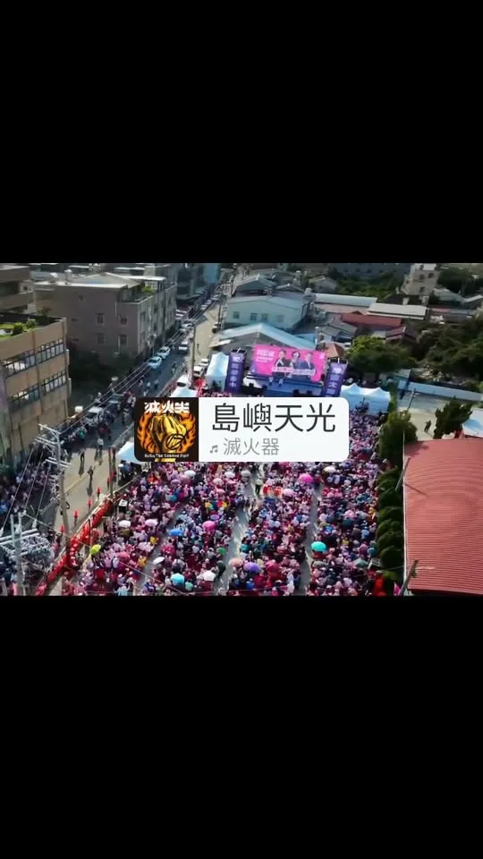
台中海線的風，就要吹向整個台中！ 謝謝大家給予何欣純無比信心，逗陣拚、一起贏！！
@schuanglawyer:桃園不需要神隱市長，更不該是犯罪集團的溫床。 桃園爆發駭人聽聞的人口販運與器官買賣未遂案，不法集團用工作機會當誘餌，把三位求職者囚禁在中壢民宅，企圖送到境外摘取器官。 幸好在尚未出境前，檢警及時阻止憾事發生，感謝第一線同仁努力！ 本案揭露四天以來，看不到張善政的態度。治安亮紅燈的第一時間，首長必須站出來安撫民心、宣示強力掃蕩意志。但直到週日深夜，市民還是不了解張市府打算如何防止類似案件發生。 有些年輕人自嘲中壢是「台灣佛羅里達」，本來是玩笑話。但現在的中壢，除了是頻頻塞車的大工地，還淪為犯罪集團的器官庫。 張善政的沈默，不只是對受害者冷漠，更對不肖分子釋放錯誤訊息。難道桃園是一個出了大事，市長也毫無反應的城市嗎？ 我是黃世杰，面對人口販運與黑牢，除了加強求職陷阱宣導，積極打擊幫派等犯罪組織外，我主張市府必須主動出擊、連根拔起。 從源頭斷絕，勞動局應主動鎖定不合常理的高薪求職廣告，重罰假徵才公司並移送法辦；與檢警合作建立通報機制，里長、房東或管委會若察覺住宅進出異常，可即時通報；配合檢警清查後，若不法據點有違建或違規使用情形，建管處依相關法令，積極進行斷水斷電或強制拆除。
是誰這麼有才？昨晚有市民朋友，把「杰印發功」徽章送給我！ 感謝熱情支持者把祝福化作創意小物，讓我們一起杰伴發功、杰in成功，桃園必勝！ 下次遇到，要不要跟我一起「杰印」😎？

選舉有選區，市政不能有界線！ 今天下午，我連跑太平、大里三場，從 #江啟臣之友會太平分會 成立，到北太平、北大里問政說明會，謝謝鄉親一路熱情相挺！💪 太平人口已突破20萬，建設一定要 #加碼加速加強！我要打造「#20分鐘生活圈」，讓上班、上學、就醫、採買更省時，把時間還給市民與家人。 交通要推動藍線延伸太平、屯區捷運環狀線，先優化公車再推動免費；敬老愛心卡改採一年結算、計程車單趟折抵200元，並補助65歲以上市民施打帶狀疱疹疫苗。太平、大里的產業也要結合實體AI、機器人與無人載具，讓產業升級、勞工加薪。 感謝 好立委 楊瓊瓔 委員、江連福前委員、余文欽總幹事，以及 蘇柏興 興台中、接勵向前 我是佳恬 、 #賴義鍠 、林碧秀 議員，還有李麗華前議員、李煥湘理事長、 紀進豐里長及所有地方夥伴並肩相挺。 太平6成，一起拚！讓屯區升級、臺中升級！ #敬老卡升級 #交通升級 #產業升級 #太平 #大里 #臺中啟程 #打造旗艦城
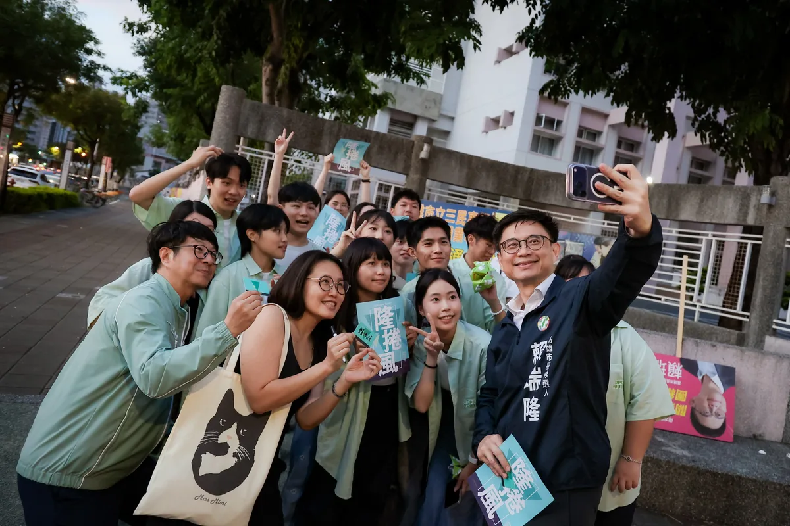
@zenolai:Lighting！青春來挺！ @youthdpp 民進黨青年部國務青輔選團啟動第一週就來到高雄，我和 @aaronyin 尹立也加入街宣的行列，和青年朋友一起向往來的人潮問好，爭取支持💪 謝謝青年夥伴的熱情！我專程帶來飲料，讓大家消消暑，不只是今天的街宣，高雄青年的未來，也有我相挺！
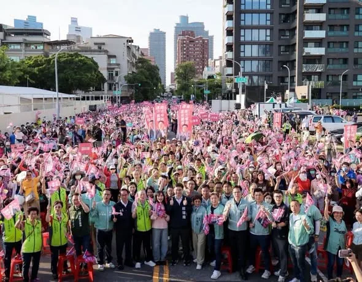
榮耀商圈、擁抱山海 站在海邊路的會場，看著高雄港旅運中心、高雄展覽館就在眼前，這幾年高雄的轉變，大家都看得見。前新苓鼓鹽後援總會正式成立，現場超過三千位好朋友到場支持，一起成為高雄隊。感謝許文欽總會長一路支持，也感謝各地地方團隊站出來，一起為高雄打拚。 中央有 黃捷 委員，為青年居住、商圈發展努力；地方有 簡煥宗 高雄市議員 、 姐姐的行動力 李喬如 、 高雄市議員郭建盟、 湯詠瑜 詠瑜新選擇 、 黃文益 高雄市議員 ，持續關心地方建設。有中央、地方一起合作，市政才能一項一項往前走。 未來的市中心，要更適合居住，也要讓商圈重新熱起來。 前金、新興、苓雅將加速推動公辦都更、老宅延壽，搭配青創補助，讓新堀江、玉竹、三多等商圈重新聚人氣。同時持續增加敬老卡、長照與托育服務，讓老城區住得更安心、生活更方便。 鼓山、鹽埕則會持續把山海優勢轉化成生活魅力。從輕軌串聯港灣、內惟藝術中心，到鹽一市場活化，這些改變已經逐漸走進大家的日常。下一步，將加速推動中鼓山宜居特區、提升壽山動物園服務，也結合大港閱冰、旗津風箏節等活動，讓山海資源與城市生活更緊密。 高雄的建設還要繼續往前。大選倒數76天，請大家繼續作夥，拚市長接棒、議會過半，讓高雄一步一步變得更好。 我們一起拚，高雄繼續向前！ 趙天麟 李昆澤 李柏毅 拚搏未來 鍾年晃談天說地 邱俊憲 高雄市議員 何權峰 高雄市議員 黃文志 高雄市議員 林智鴻 高雄市議員 張博洋 鳳山絕配 鄧巧佩 蔡秉璁 高雄向前衝 黃敬雅 Huang Ching-Ya 吳昱鋒-鎮港小前鋒

大岡山之友會，正式成立！ 今天來到大岡山，看見許多在地鄉親站出來支持，心裡真的非常感動。大岡山後援會位處重要交通要道，大家願意在這裡為高雄、為這場選戰站在一起，就是一股讓全高雄都看得見的力量。 四年前來到高雄，從競選到現在，一步一腳印走遍高雄。四年來，沒有離開高雄，買在高雄、住在高雄，也把高雄當成真正的家。這一路走來，更深深感受到，鄉親要的從來不是漂亮口號，而是一個願意留下來、願意傾聽，也願意真正解決問題的人。 接下來，還要走更多地方、見更多鄉親。也希望大家一起成為柯志恩的分身，把這份正向、陽光的力量帶到高雄每一個角落，幫忙拉票、幫忙拜託鄉親，把更多認同這座城市未來、渴望城市繼續改變與突破的人團結起來。 高雄的傳統產業，需要政府真正關心，也需要一雙看得見產業困境的眼睛；長輩需要更好的照顧，年輕人要有買得起、養得起的未來，孩子也要有更好的教育與國際競爭力。這些事情，都不能只是選舉時說說而已，而是未來四年真正要努力做到的事。 這一場選戰，資源或許不對等，排山倒海的抹黑、造謠也隨之而起，但我們的士氣絕對不低落。我要懇請所有鄉親一起守護國民黨在大岡山所提名的四位議員候選人 黃韻涵、方信淵-高雄市議員、宋立彬 高雄市議員、李亞築 高雄市議員 服務處 與里長，也要一起拚、一起過關！ 謝謝大岡山的鄉親站出來，從今天開始，一起把支持化成行動，把點滴的熱情都拚出來。 大岡山一起拚，高雄一起贏！ #大岡山 #高雄 #一起贏
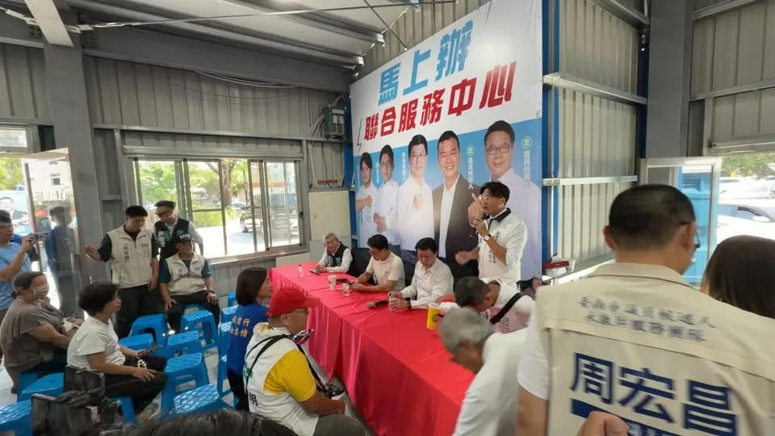
臺南藍白合聯合服務中心成立
台中海線的陽光好美、好燦爛，此時還起風了！！ 椅子排列整齊，恭候市民鄉親大駕光臨，給予何欣純最大的鼓勵與支持！！ #何欣純海線競選總部 今天下午就要成立，歡迎所有市民鄉親好朋友 #欣潮 #追欣族 #台中純派 一起參加，全力相挺何欣純！💪💪 📌日期｜9/13（日）今天下午3：30 📌地點｜清水龍天宮旁（台中市清水區西社里鎮新路21號）

@prof.kochihen:今早，我特別與黨籍議員一同邀請王金平院長擔任我的競選總部主任委員。 四年前第一次來到高雄參選市長，王院長一路給我支持、給我鼓勵，也在很多關鍵時刻替我加油打氣。這份情誼，我一直放在心上。 我知道，對王院長來說，願意接下這份職位，是一個相當重要的決定。過去王院長很少親自擔任其他候選人的競選總部主委。這一次，因為高雄是王院長的家鄉，也因為他始終心繫高雄、關心這座城市的未來，王院長願意再次站出來，和我們並肩作戰，一起為高雄打拚。